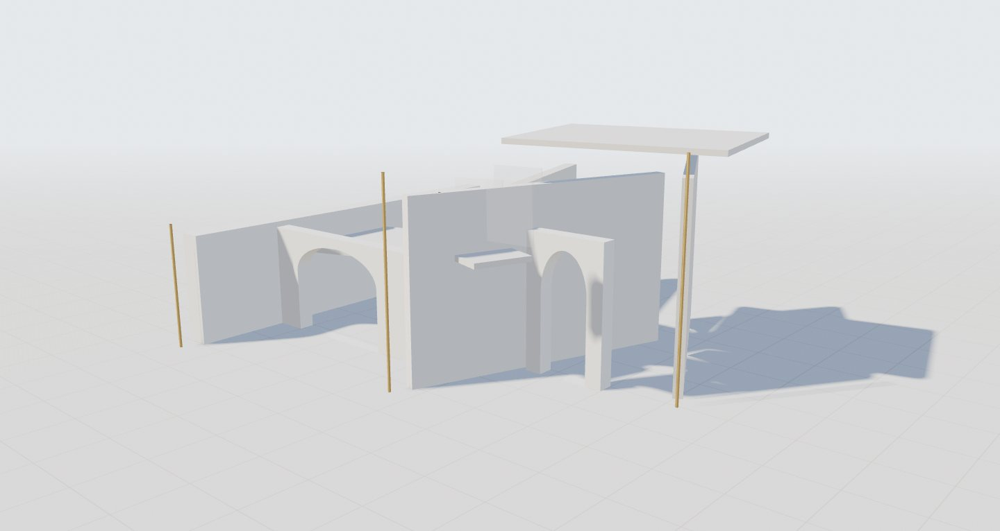
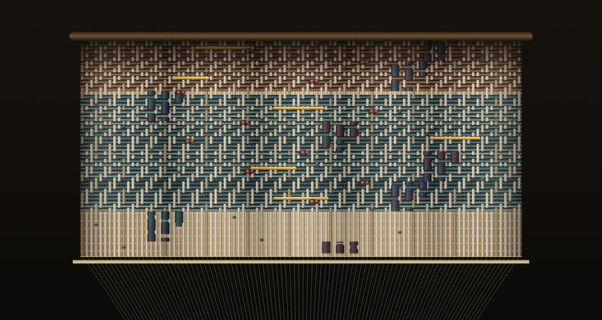
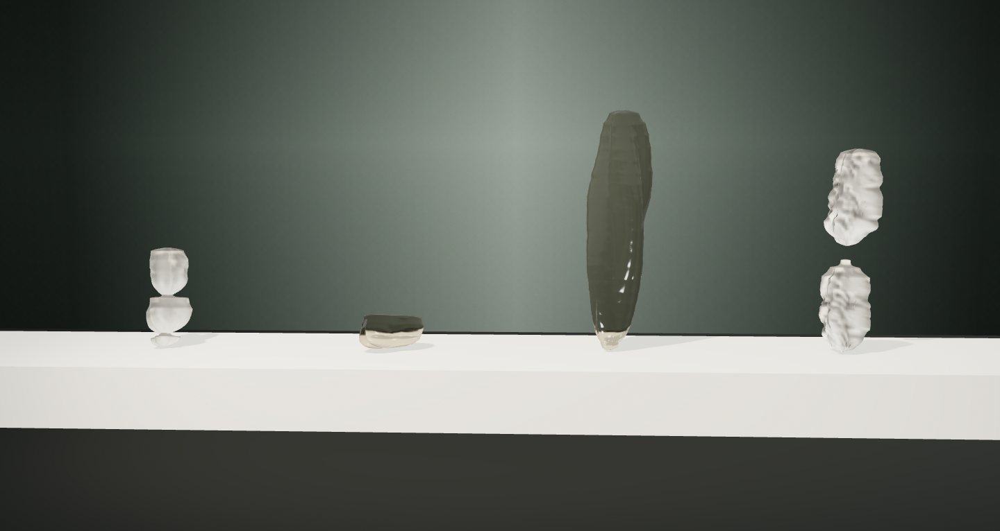
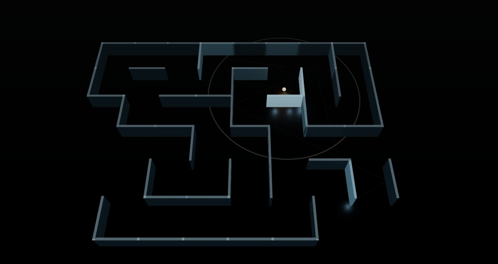
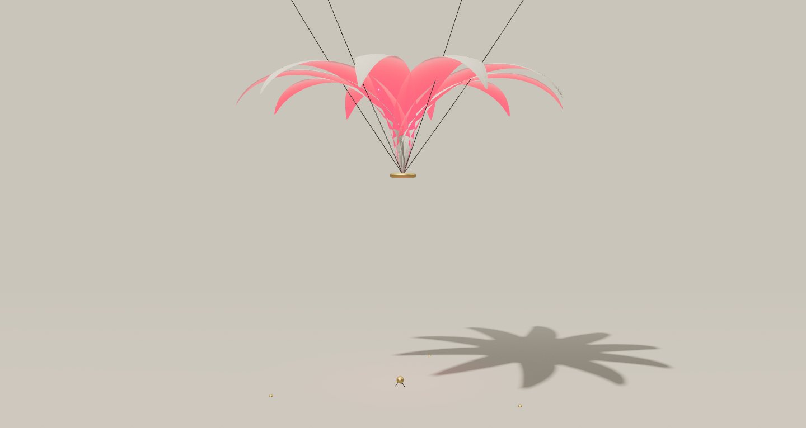

SOUND / 4 — Where Sound Stays
聲音的居所聲音如何形成空間、材料、記憶與事件
聲音一發出就開始消失。這八件作品各自替它找一個可以停留的地方：一座只在和弦裡站穩的建築、一匹記得樂句的布、一道被沉默切開的縫、一枚把整首歌收進螺旋的化石；兩層幾乎同步的潮汐、一口氣留下的玻璃、一座由回聲一段段點亮的迷宮，以及一個始終差一點就要翻開的形體。
每件作品都由一份明確的樂譜同時驅動聲音與圖像：你聽見的事件，就是畫面發生的原因。慢慢看，暫停，重播；同一條規則在不同時刻會長出不同的東西。
-

01共振建築
Resonant Architecture《空氣有自己的骨架》
每八秒換一個和弦，整座建築在三秒內慢慢挪成另一種空間。
-

02和弦織機
Chord Loom《一首歌，被織成一匹布》
同一個樂句回來時，布面上的紋樣也跟著回來。
-
 03
03休止符
Silence Cuts《沉默把空間切開》
一段有張力的聲音突然停下，表面安靜地打開。
-
 04
04聲音化石
Sound Fossil《這首歌曾經存在》
最後一個音消失，生長停止，燈光轉成看標本的光。
-
 05
05相位潮汐
Phase Tides《兩個幾乎同步的世界》
兩層幾乎同步的節奏慢慢錯開，再安靜地重新聚合。
-

06呼吸雕塑
Breath Portrait《一口氣的肖像》
同一句話，慢慢說與急著說，留下兩件不同的雕塑。
-

07回聲迷宮
Echo Labyrinth《房間是聲音走過的路》
一個新轉角被回聲照亮，下一次回聲就繞進了原本看不見的通道。
-

08能量蓄積
Stored Energy《尚未發生的爆發》
形體快撐不住了，但你不知道是哪一個音會讓它翻開。
聆聽
每件作品進入後按「開始聆聽」才會發聲。建議耳機或喇叭、音量適中；切換作品時上一件的聲音會停止。靜音觀看時，畫面仍依樂譜同步。
操作
空白鍵播放／暫停，M 靜音。每件作品有少量自己的操作：換和弦、換織法、留白程度、重新生成、示範聲音、發出一個聲音、蓄能模式。
關於規則
畫面不是錄好的影片：每一件都由同一份樂譜同時產生聲音與圖像。建築與回聲是聲學啟發的創作模型，並非精確的聲學模擬。